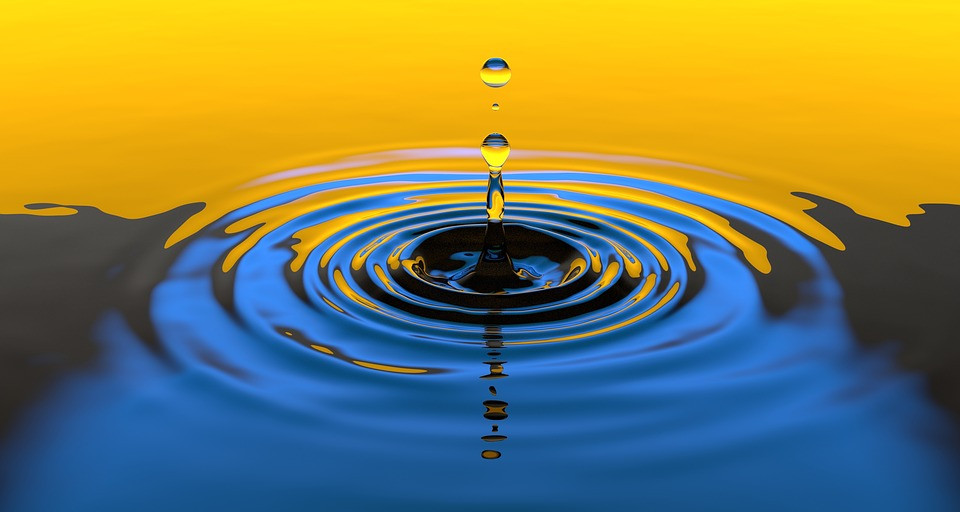
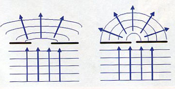

Fala – zaburzenie rozprzestrzeniające się w ośrodku materialnym lub w przestrzeni. W przypadku fal mechanicznych
cząstki ośrodka, w którym rozchodzi się fala, oscylują wokół położenia równowagi, przy czym przenoszą energię z jednego
miejsca do drugiego bez transportu jakiejkolwiek materii.
W zależności od kierunku rozchodzenia się fal można podzielić je na poprzeczne i podłużne. Fale poprzeczne mają kierunek
drgań prostopadły do kierunku rozchodzenia się (np. fala na sznurze, fale elektromagnetyczne). W falach podłużnych
drgania odbywają się w tym samym kierunku, w którym następuje ich propagacja (np. fale akustyczne). Natomiast w
przypadku fal rozchodzących się na wodzie ma się do czynienia z superpozycją drgań poprzecznych i podłużnych.

odbicie – po dojściu do granicy ośrodków fale zmieniają zwrot, poruszając się nadal w tym samym ośrodku
załamanie (refrakcja) – na granicy ośrodków fala, przechodząc do ośrodka, w którym porusza się z inną prędkością,
zmienia kierunek swego biegu
dyfrakcja – uginanie się fali na krawędziach, czego skutkiem jest zdolność do omijania przeszkód mniejszych niż długość
fali, oraz powstawanie pasków dyfrakcyjnych po przejściu fali przez wąską szczelinę albo przeszkodę (np. siatkę
dyfrakcyjną)

interferencja – nakładanie się spójnych fal z różnych źródeł, które prowadzi do wzmocnienia lub wygaszenia się tychże
fal
Efekt Dopplera – zjawisko fizyczne występujące dla fal, polegające na powstawaniu różnicy częstotliwości fali wysyłanej
przez jej źródło oraz częstotliwości fali rejestrowanej przez obserwatora, który porusza się względem tego źródła.
Dla fal rozprzestrzeniających się w ośrodku, takich jak na przykład fale dźwiękowe, wielkość efektu zależy od prędkości
obserwatora oraz źródła względem ośrodka, w którym te fale się rozchodzą.